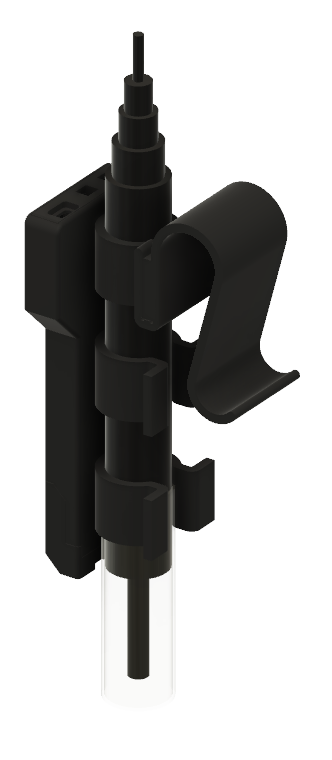
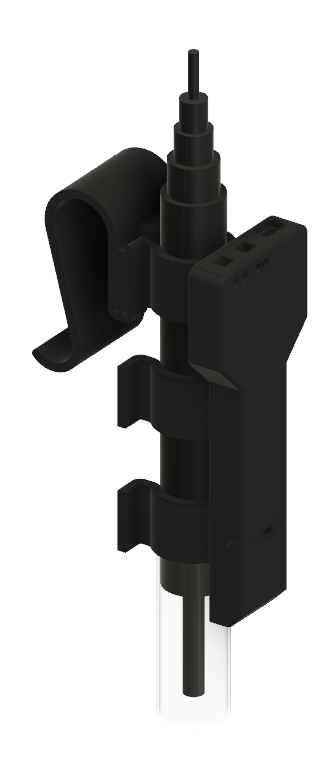

Pantau langsung
Kepekatan warna dan pH larutan muncul langsung dari sensor lewat Bluetooth.
Serona memantau kepekatan warna dan pH larutan pewarna secara langsung lewat sensor IoT, lalu memandu kamu memperbaikinya.
Segera hadir di App Store untuk iPhone dan iPad.

Geser untuk memutar sensor
Dari resep sampai larutan selesai dipakai, semuanya ada dalam satu aplikasi.
Kepekatan warna dan pH larutan muncul langsung dari sensor lewat Bluetooth.
Simpan resep: jumlah air, pewarna, dan zat pembantu, lalu pakai ulang untuk bak berikutnya.
Kamu diberi tahu dengan tampilan dan bunyi saat kepekatan atau pH turun di bawah batas resep.
Ikuti tiga tahap: volume air, pH, lalu kepekatan warna, lengkap dengan takaran yang perlu ditambahkan.
Tiga langkah dari resep sampai larutan terjaga.
Isi nama warna, jumlah air, kode pewarna, dan zat pembantu beserta beratnya.
Tambahkan bak, pilih sensor lewat Bluetooth, lalu mulai pindai. Pembacaan pertama menjadi acuan 100%.
Lihat kepekatan dan pH terkini. Kalau menurun, ikuti panduan perbaikan. Tekan Selesai bila bak sudah tidak dipakai.
Casing sensor dirancang sendiri oleh tim Serona dan terhubung ke aplikasi lewat Bluetooth.
